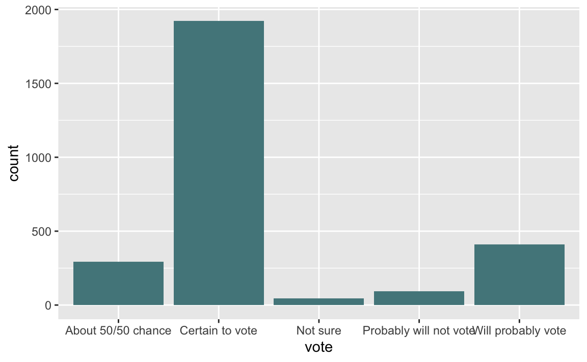
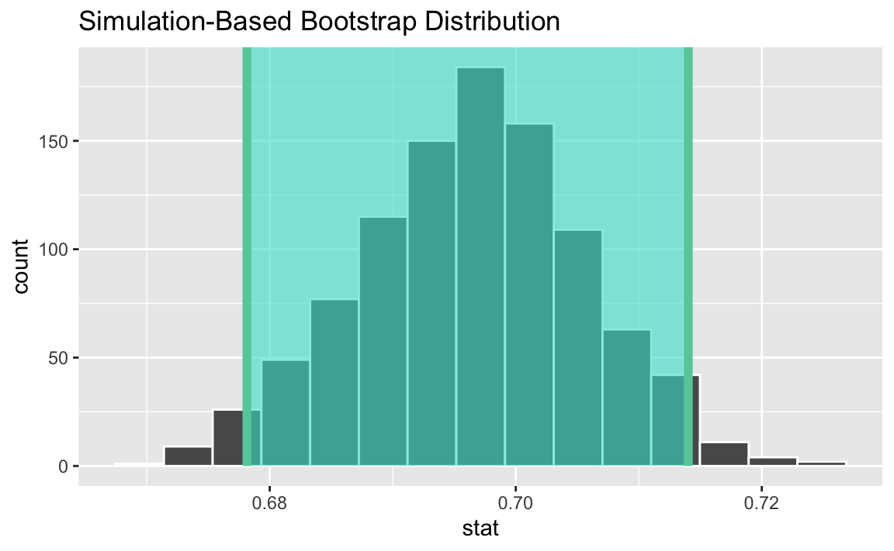

library(tidyverse)
library(tidymodels)Lab 03 – Voter Turnout
Lab
Suggested answers
The goal of this lab is to demonstrate understanding of material from Chapters 11-13. In particular, we will do an inference on a single population proportion and
- Critique data-based claims
- Compute and interpret confidence intervals.
- Articulate the basic steps in a hypothesis test.
1 Introduction
In a survey conducted by Survey USA between September 30, 2023 and October 3, 2023, 2759 registered voters from all 50 US states were asked
America will hold an election for President of the United States next November. Not everyone makes the time to vote in every election. Which best describes you? Are you certain to vote? Will you probably vote? Are the chances you will vote about 50/50? Or will you probably not vote?
Based on these responses, we can ask whether we expect voter turnout to be greater than it was in the 2020 presidental election. That year, 66% of the voting-eligible population turned out for presidential election (the highest rate for any national election since 1900).
Packages and Data
For this analysis, we’ll use the tidyverse and tidymodels packages.
The data from this survey is in the file voting-survey.csv saved in your posit.cloud workspace.
voting_survey <- read_csv("voting-survey.csv")2 Preliminary Analysis
ggplot(voting_survey, aes(x = vote)) +
geom_bar(fill = "cadetblue4")
voting_survey |>
count(vote) |>
mutate(p_hat = n / sum(n)) |>
filter(vote == "Certain to vote")# A tibble: 1 × 3
vote n p_hat
<chr> <int> <dbl>
1 Certain to vote 1921 0.696Estimation
Based on these data, our goal is to estimate the true proportion of registered US voters who are certain to vote in the next presidential election.
voting_survey <- voting_survey |>
mutate(vote = if_else(vote == "Certain to vote", "Certain to vote", "Not certain to vote"))
obs_stat <- voting_survey |>
specify(response = vote, success = "Certain to vote") |>
calculate(stat = "prop")
set.seed(1234)
boot_dist <- voting_survey |>
specify(response = vote, success = "Certain to vote") |>
generate(reps = 1000, type = "bootstrap") |>
calculate(stat = "prop")
ci <- boot_dist |>
get_ci()
visualize(boot_dist) +
shade_ci(ci)
Not correct. We are 95% confident that 68.1% to 71.3% of all registered voters are certain to vote in the next presidential election.
3 Testing
A newspaper claims that based on this study, the number of voters certain to vote in the 2024 election will be more than in 2020. Do these data provide convincing evidence for this claim?
H0: There is nothing going on, 66% of registered US voters are certain to vote in the next presidential election. p = 0.66.
HA: There is something going on, more than 66% of registered US voters are certain to vote in the next presidential election. p > 0.66.
The p-value is approximately 0, which is lower than the 5% discernability level, so we would reject the null hypothesis. The data provide convincing evidence for the alternative hypothesis.